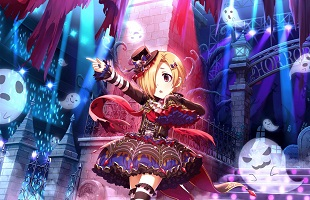
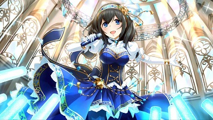

・白坂小梅
ホラー好きで霊感が強く、
普通の人には見えないものが色々見えるらしい少女。
金髪で右目が隠れた髪型をしている。
かすれるような声とたどたどしい口調で話す。
彼女が歌う楽曲は『小さな恋の密室事件』。
彼女の曲である『小さな恋の密室事件』は
歌詞の一部にダイイングメッセージの要素があり、
それに気づくと歌詞の見え方が変わってきます。
また、ゲーム内のどんな場面でも右目が見えないようになっていて、
そこがまたいろいろ想像ができて面白いです。
・鷺沢文香
書店の仕事をしていた本好きの文学部所属の大学生。
黒髪のロングヘアで前髪は瞳の半分が隠れる長さ。
人と話すのも目を合わせるのも苦手で人前にも抵抗がある。
また、本に夢中になりすぎて周りの声が聞こえていないことがある。
彼女が歌う楽曲は『Bright Blue』。
普段の静かな様子と度々見せる笑顔のギャップが好きです。
・二宮飛鳥
現役14歳のいわゆる中二病。
自覚はあるらしく、自身のことを「痛いヤツ」と称することもある。
色とりどりのエクステをつけており、本人曰く「ささやかな抵抗」とのこと。
回りくどい言い方で物事を語ることが多く
時に発言の真意を理解するのが難しい事があるが、
同族なら理解できるところがあるのかもしれない。
彼女が歌う楽曲は『共鳴世界の存在論』『反逆的同一性 -Rebellion Identity-』。
私自身が結構『そっち側』なのでどうしても惹かれます。
『共鳴世界の存在論』は歌詞や曲調からして
カッコイイ寄りの曲でとても好きです。
(時々カラオケで歌います。)